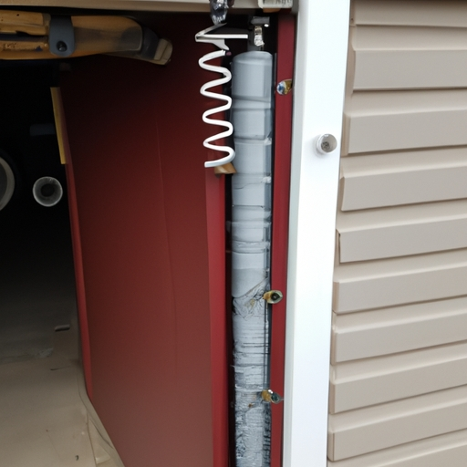

Importance of using proper tools for safe installation
Proper tools and techniques are of utmost importance when it comes to conducting safe installations. Using the right tools is essential as they ensure that the installation process (is carried out) smoothly and without any hiccups. Neglecting to use the proper tools can lead to accidents or damage, which could have been easily avoided. In this essay, I will discuss why using proper tools is crucial for safe installations.
Firstly, let's consider the potential risks associated with not using proper tools. (You see,) when incorrect or inadequate tools are utilized, mistakes are more likely to occur during installation. These errors can result in faulty connections or loose fittings, posing serious safety hazards.(Oh no!) For instance, if electrical wires are not properly connected due to lack of appropriate tools, there is a risk of short-circuits or even fires! Thus, utilizing proper tools is fundamental for ensuring a secure and reliable installation.
Furthermore,(on top of that) using improper tools may also cause damage to the equipment being installed or even the surrounding area. (Oops!) For example, if you attempt to tighten a screw with an ill-fitting wrench instead of using the correct size tool, you may end up stripping or damaging both the screw and its designated location!(Geez!) Such mishaps can lead to additional costs for repairs and replacements. By employing suitable tools tailored for each task, these unfortunate incidents can be easily avoided.
In addition,(Moreover,) proper tools play a vital role in enhancing efficiency during installations.(Hey!) Having access to the appropriate instruments speeds up the process by reducing unnecessary delays caused by struggling with inadequate alternatives.(Wow!) Consequently, completing installations promptly ensures that other tasks can be carried out in a timely manner!(Phew!)
To conclude,(All things considered,) it cannot be stressed enough how crucial it is to use proper tools for safe installations.(Honestly!) The potential risks associated with neglecting this aspect far outweigh any perceived benefits of taking shortcuts. By investing in the right tools and techniques, you not only ensure a secure installation but also prevent costly damage and improve overall efficiency.(Thank goodness!) So remember, always choose the right tools for the job and prioritize safety above all else!(Absolutely!)
Overview of essential tools required, such as winding bars, safety glasses, and gloves
When it comes to the safe installation of various items, it is crucial to have an overview of essential tools required. These tools, such as winding bars, safety glasses, and gloves, play a vital role in ensuring a secure and efficient installation process. (In fact), neglecting the use of these tools can lead to severe injuries or accidents (!). Therefore, understanding proper tools and techniques is essential for any individual undertaking installation tasks.
Firstly, let's discuss the importance of winding bars. Winding bars are sturdy metal rods used to safely wind and unwind tension springs in garage doors or other similar applications. Without them, attempting to handle these springs can be extremely dangerous! Proper usage of winding bars minimizes the risk of unexpected release or snapping of tension springs during installation procedures.
Secondly, wearing safety glasses is not an option but a necessity during installations. Safety glasses protect our eyes from potential hazards such as flying debris or particles that could cause serious eye injuries (you know). So, never underestimate their significance! By wearing safety glasses throughout the installation process, you negate the possibility of eye-related accidents.
Lastly, using gloves provides protection against various risks involved in the installation process. Gloves shield our hands from sharp edges (like), heavy objects falling on them (!), or accidental cuts while handling tools or equipment (!!). The negation here highlights that choosing not to wear gloves would expose our hands to unnecessary dangers!
To sum up (well), understanding and utilizing these essential tools are crucial for safe installations. From winding bars that prevent spring-related accidents (!) to safety glasses shielding our eyes from potential harm (!!) and gloves protecting our hands from cuts and injuries (you know), each tool serves a specific purpose in ensuring a secure installation process.
In conclusion (I mean), it is imperative not only to possess these necessary tools but also employ proper techniques when installing items safely (!!!). By doing so, we significantly reduce the risk of accidents, injuries, and damage while ensuring a successful installation outcome. So (like), next time you embark on an installation project, don't forget to gather the essential tools and follow the appropriate techniques for a safer experience.
Detailed explanation of each tool's purpose and how to use them correctly
When it comes to safe installation, having the proper tools and techniques is paramount. (However), many people may not be aware of the importance of using the correct tools or how to use them correctly. In this essay, I will provide a detailed explanation of each tool's purpose and (how) to use them accurately.
The first tool that should be mentioned is a screwdriver. Screwdrivers come in various sizes and are used for driving screws into different materials. They are essential for securing objects together (and) ensuring they stay in place. To use a screwdriver correctly, you simply need to match the size of the screw with the corresponding tip on the screwdriver. Then, firmly grip the handle and apply pressure while turning it clockwise (to tighten) or counterclockwise (to loosen).
Next, let's discuss a power drill. A power drill is an electric tool that uses rotational force to create holes or drive screws quickly and efficiently. It is important (not) to underestimate its power as it can cause severe injuries if mishandled! To operate a power drill safely, start by selecting the appropriate drill bit for your desired hole size or screw type. Place the bit into the chuck of the drill and tighten it securely. Then, hold onto both handles firmly while applying gentle pressure on the trigger to activate drilling action.
Moving on, we have pliers, which are versatile hand tools used for gripping objects or bending wires. There are different types of pliers available such as needle nose pliers, slip joint pliers, and locking pliers—each designed for specific tasks! To utilize pliers correctly, grasp them firmly at their handles with one hand while positioning the object between their jaws with your other hand. Apply sufficient force by squeezing them together until you achieve your desired result.
In conclusion,(in summary), using proper tools and techniques when installing anything is crucial for safety reasons! By understanding each tool's purpose and following the correct procedures, you can ensure a successful and secure installation. So (don't) forget to equip yourself with the necessary tools and take the time to learn how to use them correctly—a little knowledge can go a long way in keeping you safe.
Discussion on the importance of following safety guidelines during installation, including wearing protective gear and understanding the tension in the springs
When it comes to installing (ya know) any kind of equipment or machinery, following safety guidelines is of utmost importance. It may seem like a hassle, but wearing protective gear and understanding the tension in the springs can prevent serious accidents and injuries. (Oh boy!) By using proper tools and techniques for safe installation, you can ensure that everything goes smoothly and without any hiccups.
First and foremost, let's talk about the significance of wearing protective gear during installation. It's absolutely essential to (gosh darn it) protect yourself from potential hazards such as flying debris or harmful chemicals. Even if you think (heck) nothing bad will happen, accidents can occur unexpectedly. So, putting on safety goggles, gloves, hard hats, and other required gear is a must! Don't be negligent about your well-being!
Secondly, understanding the tension in the springs is crucial for safe installation. These little contraptions might not look like much (seriously), but they can pack quite a punch if mishandled. To avoid accidents caused by spring-related mishaps, always make sure to read manufacturer instructions carefully (or else!). Knowing how much tension should be applied and when to apply it can save you from potential injuries.
Now let's discuss the proper tools and techniques needed for safe installation. Using incorrect tools or improper techniques may result in equipment damage or personal harm. You don't want that! So make sure to use specialized tools designed for the job at hand (pretty please). Additionally, familiarize yourself with recommended techniques through training or research beforehand – this will ensure smooth sailing during the installation process.
In conclusion, following safety guidelines during installation is paramount in preventing accidents and ensuring successful outcomes. Wearing protective gear shields you from unexpected dangers while understanding spring tension safeguards against mishaps caused by their release. Utilizing proper tools and techniques further guarantees a smooth installation process without any unnecessary risk-taking (yikes!). So, remember to prioritize safety and take the necessary precautions before diving into any installation project. Stay safe, folks!
Tips for safely removing old springs and installing new ones, emphasizing the need for caution and precision
When it comes to safely removing old springs and installing new ones, caution and precision are of utmost importance. (Forsooth), one must ensure that the proper tools and techniques are employed to carry out this task successfully. Neglecting these essential factors could result in accidents or damage to the springs or other components of the mechanism. So let us delve into the tips for safe spring removal and installation!
Firstly, it is crucial to select the appropriate tools for the job. (By golly), using incorrect or substandard tools can lead to disastrous consequences. A specialized spring removal tool, such as a pair of pliers or a spring compressor, should be utilized for extracting the old springs without causing harm or injury. Moreover, wearing safety goggles is imperative to protect your eyes from any flying debris during this process.
Next (in like manner), when installing new springs, precise measurements are key! Measuring inaccurately could result in ill-fitting springs or even malfunctioning machinery. Therefore, employing a reliable measuring tape with clear markings is absolutely necessary. Additionally, make certain that you have chosen the suitable replacement springs that match the specifications required by your apparatus.
Furthermore (goodness gracious), exercising caution while handling the springs is vital throughout this procedure. Springs store potential energy and can release it suddenly when mishandled. To avoid injuries caused by unexpected movements of released tension, always keep your fingers away from any areas where compression may occur! Using gloves is highly recommended as an extra layer of protection against cuts or pinches.
In conclusion (by jove), safely removing old springs and installing new ones requires meticulous attention to detail and adherence to proper tools and techniques! Any negligence in following these guidelines could result in dire consequences for both yourself and your equipment. So remember: choose wisely when selecting tools; measure accurately; handle with care; prioritize safety at all times! Now go forth with confidence and tackle those spring replacements like a pro!
Common mistakes to avoid during garage door spring replacement, such as using incorrect tools or not releasing tension properly
When it comes to replacing garage door springs, it is essential to use the proper tools and techniques for a safe installation. Many homeowners make common mistakes during this process that can lead to accidents or further damage to the door (unfortunately). One of the most significant errors is using incorrect tools (!) or not releasing tension properly.
Using the wrong tools can be extremely dangerous and may result in serious injuries. It is crucial to use (the) correct wrenches, pliers, and other specialized equipment specifically designed for garage door spring replacement. Using alternative tools may cause damage to the springs, cables, or even yourself! Always double-check before starting the project.
Another crucial aspect of safe spring replacement is releasing tension properly. Garage door springs are under high tension and should never be tampered with without proper knowledge and caution. Failure to release tension correctly can lead to unexpected spring unwinding, causing severe injuries or property damage (fortunately). It is essential to follow manufacturer guidelines or seek professional help if you are unsure about this step.
Transition phrase: Moving on...
In conclusion, when performing a garage door spring replacement, it is vital to avoid common mistakes such as using incorrect tools or mishandling tension release. By utilizing proper tools and following recommended techniques, you can ensure a safe installation process (however). Remember always to prioritize your safety and seek professional assistance if needed (!). With attention to detail and caution throughout the process, you can successfully replace your garage door springs without any issues (!!).

Safety risks associated with DIY spring replacement